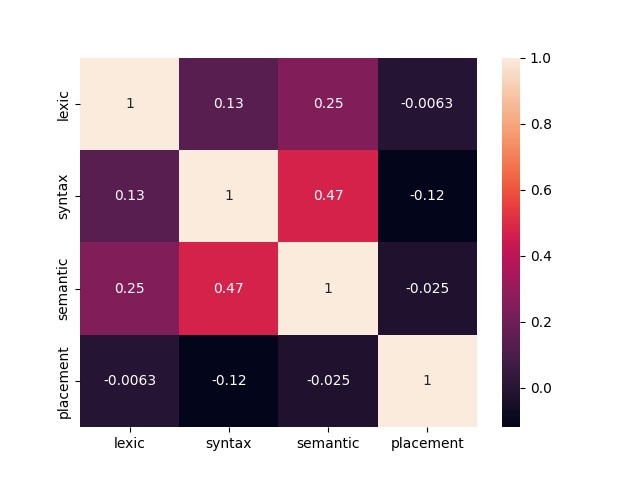
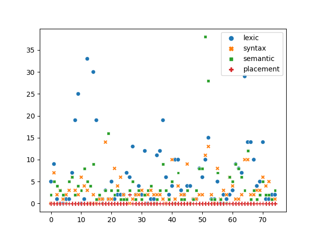

{% extends 'base.html'%}

{% block content %}
<head>
    <title>Query tables</title>
</head>
<body>
<p>Выберите представление: </p>
<p>
<div class="select-dropdown">
    <select id="database-name-option">
        <option selected value="{{ list[0] }}">{{list[0]}}</option>
        {% for value in list[1:] %}
        <option value="{{ value }}">{{value}}</option>
        {% endfor %}
    </select>
</div>
</p>

<div class="my_table" id="table"></div>

<div class="important-buttons">
    <a href="#" class="btn btn-success" id="export-btn">
        <svg xmlns="http://www.w3.org/2000/svg" width="16" height="16" fill="currentColor" class="bi bi-download"
             viewBox="0 0 16 16">
            <path d="M.5 9.9a.5.5 0 0 1 .5.5v2.5a1 1 0 0 0 1 1h12a1 1 0 0 0 1-1v-2.5a.5.5 0 0 1 1 0v2.5a2 2 0 0 1-2 2H2a2 2 0 0 1-2-2v-2.5a.5.5 0 0 1 .5-.5z"/>
            <path d="M7.646 11.854a.5.5 0 0 0 .708 0l3-3a.5.5 0 0 0-.708-.708L8.5 10.293V1.5a.5.5 0 0 0-1 0v8.793L5.354 8.146a.5.5 0 1 0-.708.708l3 3z"/>
        </svg>
        Экспорт таблицы в Excel
    </a>
</div>

<h3>Графики для таблицы "mistake_type_sum_by_work"</h3>

<div id="viz_for_table" class="special_div">
    <div>
        <p>Корреляция по пирсону</p>
        
    </div>
    <div>
        <p>Распределение по типам</p>
        
    </div>
</div>
<div class="system-messages">
    <ul id="sys-msgs">

    </ul>
</div>

<script src="https://unpkg.com/gridjs/dist/gridjs.umd.js"></script>
<script src="https://unpkg.com/gridjs/dist/gridjs.js"></script>
<script src="../static/script/mylang.js"></script>
<script type="module">
    import ru from "../static/script/mylang.js";
    import {getPreparedDatasetByName} from "../static/script/gridjsPreparation.js";
    import {writeMsg} from "../static/script/customLog.js";

    const tableDiv = document.getElementById('table');

    const updateUrl = (prev, query) => {
        return prev + (prev.indexOf('?') >= 0 ? '&' : '?') + new URLSearchParams(query).toString();
    };

    const dataset = await getPreparedDatasetByName("mistakes_codes", "/api/fetch_view", false);

    const mygrid = new gridjs.Grid({
        columns: dataset.columns,
        data: dataset.data,
        search: true,
        sort: {
            enabled: true,
            multiColumn: true,
        },
        pagination: true,
        language: ru
    }).render(tableDiv);

    // если делать пагинацию
    // let columnIds = Object.keys(mygrid.config.pagination);

    // tableDiv.addEventListener('focusin', saveValue);
    // tableDiv.addEventListener('focusout', updateSaved);
    // tableDiv.addEventListener('keydown', enterVal);

    const db_select = document.querySelector('#database-name-option');
    db_select.addEventListener("change", updateGridJS);

    async function updateGridJS(event) {
        let datasetName = event.target.value;
        let dataset = await getPreparedDatasetByName(datasetName, "/api/fetch_view", false);
        writeMsg(`получил данные: ${datasetName}`, 0);
        await mygrid.updateConfig({
            columns: dataset.columns,
            data: dataset.data
        }).forceRender();
    }
</script>
</body>
{% endblock %}